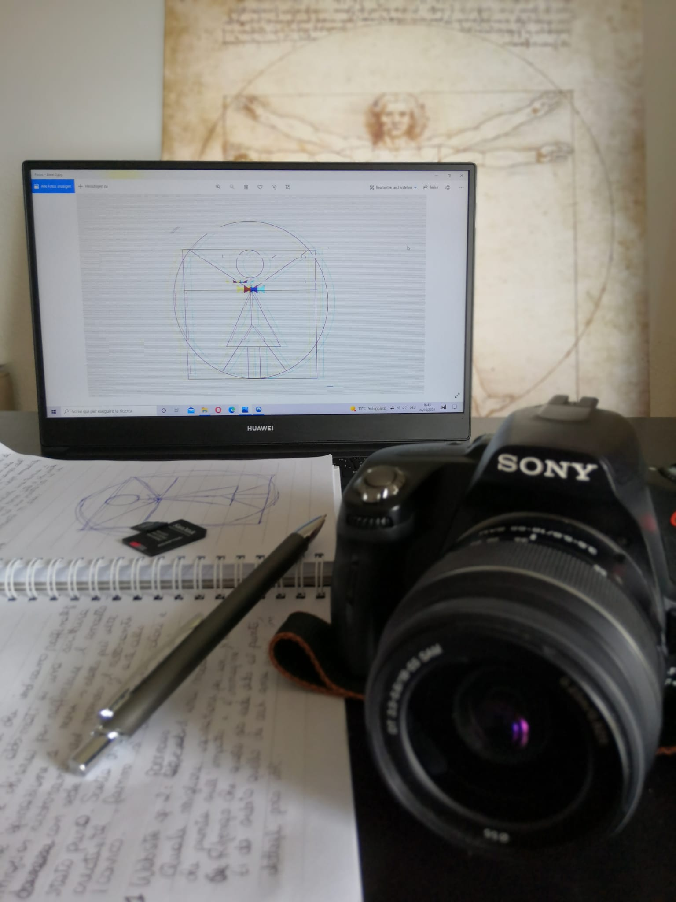
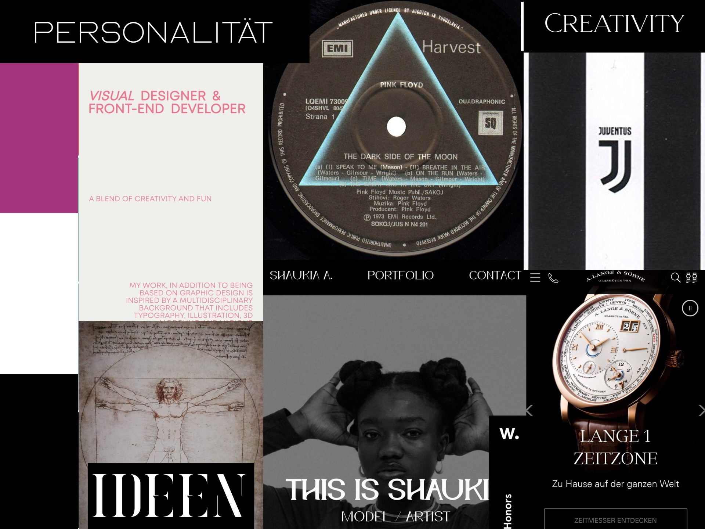
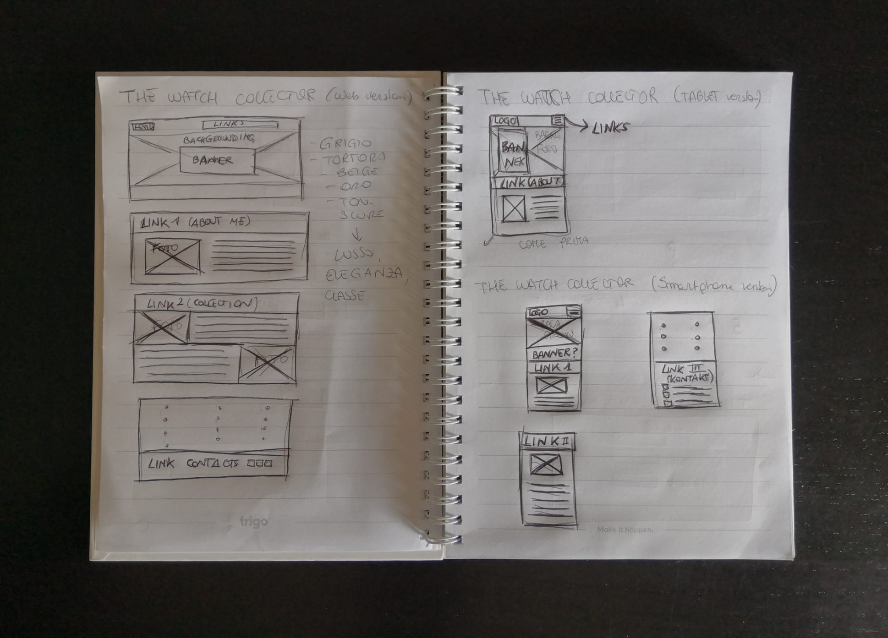
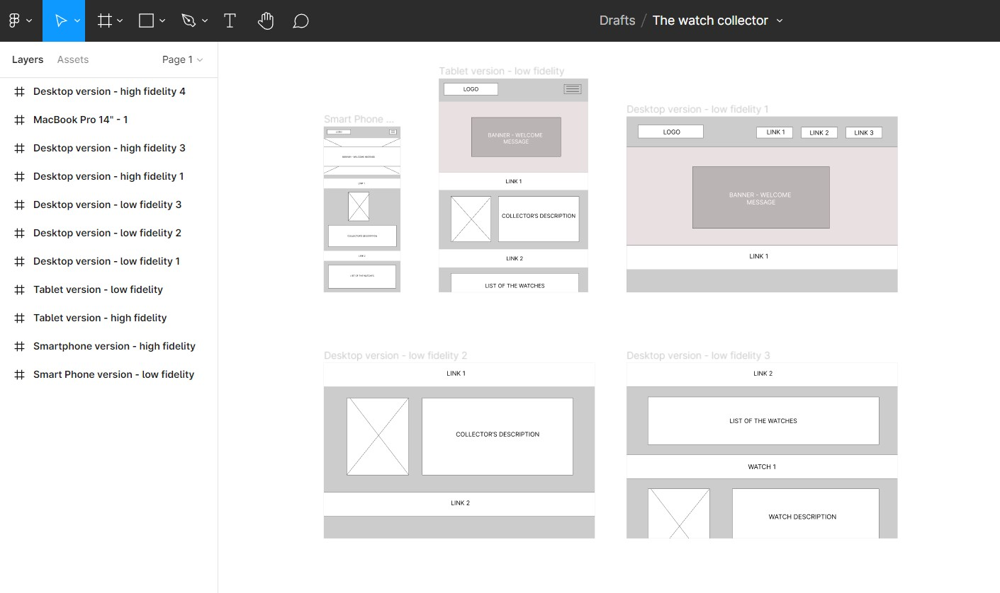
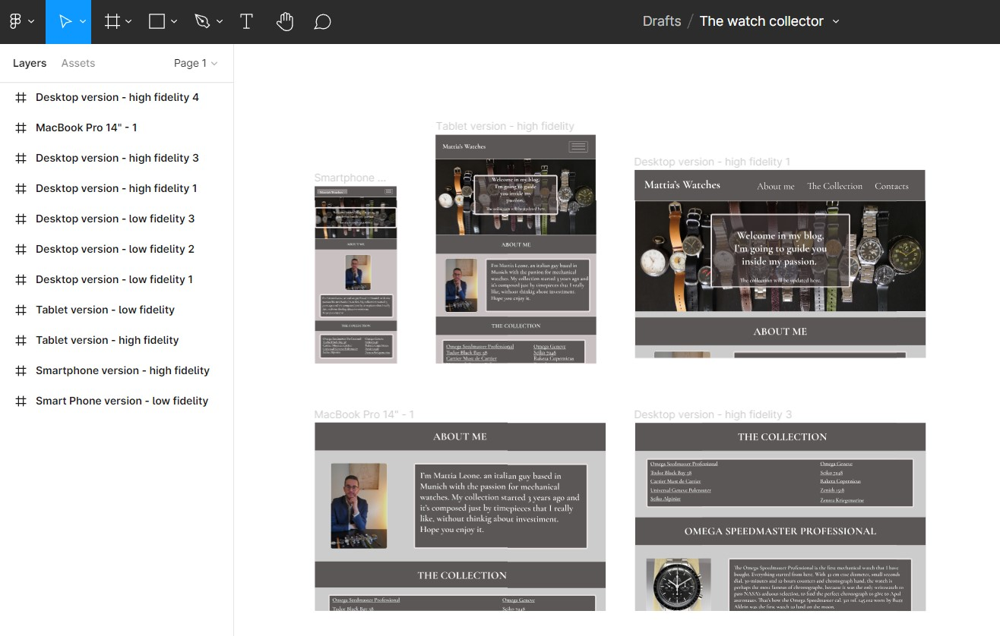
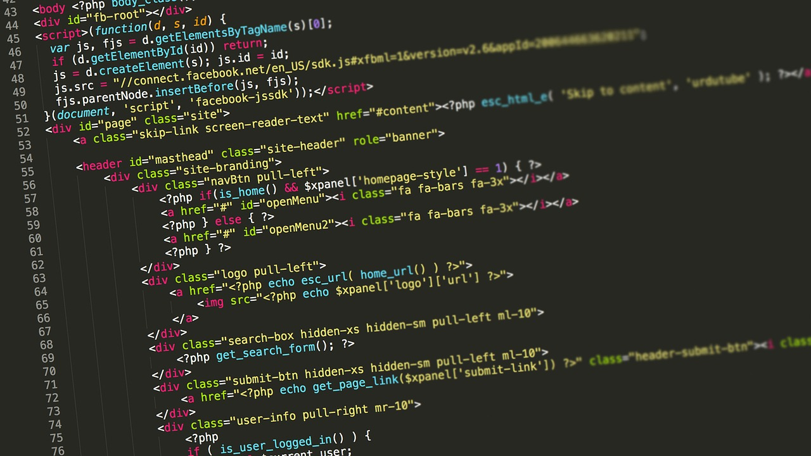
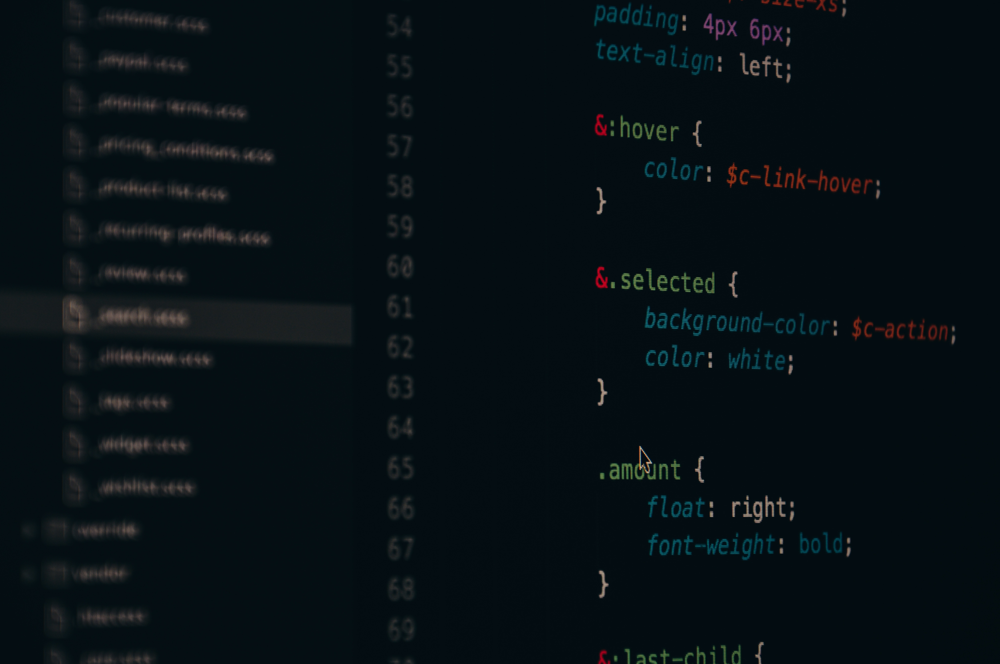

Jedes Projekt in diesem Portfolio ist fiktiv und wird von mir bis ins kleinste Detail betreut. Die schwierigste Aufgabe war es, auf der Grundlage des mir zur Verfügung stehenden Materials praktikable Ideen zu finden. Ich habe versucht, sehr unterschiedliche Themen zu wählen, die zu sehr unterschiedlichen Stilen passen. Nachdem ich die richtige Idee gefunden hatte, bestand der zweite Schritt darin, verschiedene Speicherkarten zusammenzustellen und unter tausenden Fotos die passendste herauszusuchen. Sobald die Fotos gefunden waren, war der nächste Schritt, die Textinhalte zu schreiben. Also Papier, Stift und los. Das Portfolio ist sehr persönlich und die behandelten Themen liegen mir daher sehr am Herzen. Alles, was Sie lesen, wurde von mir geschrieben und die meisten Fotos wurden von mir gemacht.

2. Alles Gezeichnete (oft auf schlechte Weise, ich bin nicht Leonardo da Vinci!) geht dank FIGMA ins digitale Format. Wenn mir Photoshop, Pixlr und andere Editing Programme bei Fotos sehr helfen, ist die FIGMA-Software das, was ich am liebsten verwende und mit dem ich am liebsten arbeite, wenn es um die Erstellung von Wireframes geht. In diesem zweiten Schritt, der der Erstellung des Low-Fidelity Wireframes entspricht, soll man die Website in Abschnitte unterteilen und die Positionen von Text- und Bildinhalten für Geräte unterschiedlicher Größe (Computer, Tablets, Smartphones) festlegen.

1. Der erste Schritt, der für mich der wichtigste für die Gestaltung jedes Projekts war, war, Stift und Papier zu nehmen und mit dem Skizzieren zu beginnen. Für mich persönlich ist der Kontakt mit Papier bei der Suche nach einer Idee unerlässlich, weil ich besser spüren kann, was ich tue.

Nachdem ich Fotos und Textinhalte gesammelt habe, musste ich darüber nachdenken, welchen Stil ich diesen geben wollte. Ich musste die Typografien und die Farben auswählen und, um Inspiration zu finden, waren Moodboards eine große Hilfe. Ich hatte das Thema und auch die Inhalte, also ließ ich mich von Fotos, Webseiten, Zeitungen, Wörtern und dem Alltag inspirieren. Ich erstellte die Moodboards, stellte alles zusammen, was mir ein Gefühl vermittelt hatte, und so war ein weiterer großer Schritt getan. Der Stil nahm langsam Gestalt an.

3. Nachdem die Low-Fidelity-Wireframes definiert waren, ging es an die Erstellung der High-Fidelity-Wireframes. Zu diesem Zeitpunkt hatte ich dank der Moodboards eine klare Vorstellung von Farben, Stil und Typografie, hatte alle Fotos ausgewählt und ggf. bearbeitet, die Inhalte geschrieben und die Positionen auf der Seite definiert. Auch mit FIGMA habe ich die High-Fidelity Wireframes für jedes Gerät erstellt und, obwohl ich schon das ganze Material fertig hatte, war es nicht einfach. Manchmal ist etwas nicht so schön, wie man es sich vorgestellt hat. Zum Beispiel war dieses Portfolio nach tagelanger Arbeit an den Entwürfen und Grafiken schwarz und blau. Dann irgendwann, ich weiß nicht wie, wurde es in 5 Minuten schwarz und weiß. Ich dachte, ich hatte das Design gefunden, das ich wollte, aber es gab noch etwas, das mich nicht zufriedenstellte, tatsächlich blockierte mich etwas, als ich dabei war, die Seite online zu stellen. Und so noch ein Tag full-immersion und viele Tests und...zufrieden mit meiner Arbeit, der Website, auf der Sie sich gerade befinden.

An diesem Punkt begann ich mit dem Schreiben des HTML-Codes, wobei ich besonderes Augenmerk auf die Verwendung von semantischen Elementen und die Anforderungen von Web Accessibility legte. Es ist wichtig, immer daran zu denken, dass unsere Website für alle zugänglich sein muss!

Immer unser High-Fidelity Wireframes im Auge behaltend, begann ich mit dem Schreiben des CSS-Codes, um das gewählte Design auf den zuvor geschriebenen HTML-Code anzuwenden, ohne zu vergessen, dass unsere Website nicht nur für alle zugänglich sein muss, sondern auch für alle Geräte korrekt sichtbar sein muss, also responsives Design nicht vergessen!